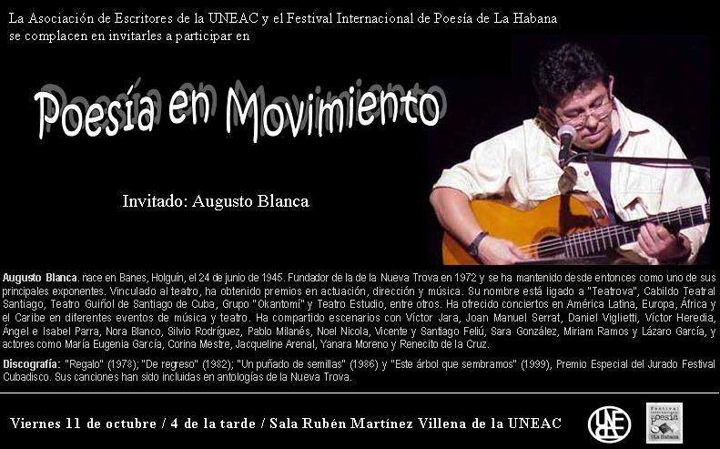

Di: Camilo García Lopez-trigo. Las Tardes de Poesía que organizan mensualmente El Festival Internacional de Poesía de la Habana y la Asociación de Escritores en la sala Rubén Martínez Villena de la UNEAC siempre nos reservan un momento para disfrutar de buena literatura contemporánea cubana. Alex Pausides, creador y organizador de este espacio, nos recuerda …
Archivio Mensile: Ottobre 2013
Ott 16 2013
invitación a tarde de poesía | Venerdì 18 Ottobre
Alberto Marrero Fernández nació en La Habana, 1956. Poeta y narrador. Durante l'anno 1986 publicó su primer poemario con el título Inclinación de balanza bajo el sello editorial Extramuros. Autor del poemario El pozo y el péndulo, publicado en la primera edición de la colección Pinos Nuevos, Letras Cubanas, en1994. Con La salvación y …
Ott 16 2013
entregan premios de la crítica literaria 2012
Juventud Rebelde Los premios de la Crítica Literaria 2012 fueron entregados este lunes en el Centro Cultural Dulce María Loynaz de la capital, a siete títulos, escogidos entre los mejores libros publicados por editoriales cubanas en ese período. El jurado, compuesto por prestigiosas figuras de las letras, escogió las obras ganadoras entre las 115 presentadas, …
Ott 12 2013
cinque scrittori Latino parlano di Nobel alice munro
Natalia Guerrero. BBC Mundo, San Juan de Puerto Rico. (Giovedì, 10 Ottobre di 2013) Alice Munro es una autora de cuentos cortos. La jornada inaugural del Festival de La Palabra en San Juan de Puerto Rico fue justo la víspera del anuncio del premio Nobel de Literatura. Era lógico que los asistentes al …
Ott 11 2013
Fragola e cioccolato dall'insieme del sud. Premio della critica 2013
Di: Pedro López Cerviño. Libro di fragola e cioccolato di Senel Paz ha appena ricevuto i critici che premio assegnato il libro Cuban Institute. Lo script per eccitante film cubano omonimo fu pubblicato da collezione meridionale, la casa editrice fondata e diretta dal poeta Alex Pausides. Insieme a questo libro, …

Poesia in movimento, con Augusto Blanca
La Asociación de Escritores de la UNEAC y el Festival Internacional de Poesía de La Habana se complacen en invitarles a participar en su espacio Poesía en Movimiento. Guest: Augusto Blanca
Augusto Blanca. nace en Banes, Holguin, il 24 di giugno di 1945. Fundador de la de la Nueva Trova en 1972 y se ha mantenido desde entonces como uno de sus principales exponentes.
Vinculado al teatro, ha obtenido premios en actuación, dirección y música. Su nombre está ligado a “Teatrova”, Cabildo Teatral Santiago, Teatro Guiñol de Santiago de Cuba, Gruppo “Okantomí” y Teatro Estudio, tra gli altri. Ha ofrecido conciertos en América Latina, Europa, África y el Caribe en diferentes eventos de música y teatro. Ha compartido escenarios con Víctor Jara, Joan Manuel Serrat, Daniel Viglietti, Víctor Heredia, Ángel e Isabel Parra, Nora Blanco, Silvio Rodriguez, Pablo Milanés, Noel Nicola, Vicente y Santiago Feliú, Sara González, Miriam Ramos y Lázaro García, y actores como María Eugenia García, Corina Mestre, Jacqueline Arenal, Yanara Moreno y Renecito de la Cruz.
Discografía: “Regalo” (1978); “De regreso” (1982); “Un puñado de semillas” (1986) e “Este árbol que sembramos” (1999), Premio Especial del Jurado Festival Cubadisco. Sus canciones han sido incluidas en antologías de la Nueva Trova.
Scritto su
Ottobre 9, 2013
Ott 03 2013
il raduno del sud
Il Fetival internazionale della poesia di l'Avana e il libro Cuban Institute, Essi vi invitano al loro prossimo Tertulia del Sur con Pierre Bernet guida, nel saluto alla giornata nazionale per la giornata della cultura cubana . Ospiti speciali includerà la presenza di poeti Edel Morales, Teresita Panamericani e Carlos Augusto Alfonso. Altri scrittori regolari dei nostri Tertulia e il pubblico condividere questo spazio con loro. Le letture saranno accompagnate con interpretazioni tradizionali del cantante-songwriter Heidi Igualada. L'appuntamento sarà venerdì prossimo 4 Ottobre per la 5 sera nella bottega di ceramica Amelia Pelaez, sede del collettivo arti visive “10 Ottobre”.
Ott 02 2013
contribuisce al festival di poesia dell'Avana con la formazione di lettori astute
Il laboratorio di scrittura, nati rende 12 anni per promuovere il gusto letterario e soprattutto la formazione dei lettori per la poesia, come una delle principali linee del Havana Festival internazionale della poesia di,iniziato martedì un nuovo ciclo, nella sala Guillen UNEAC. Responsabile del rito, poeta e promotore …

Commenti recenti